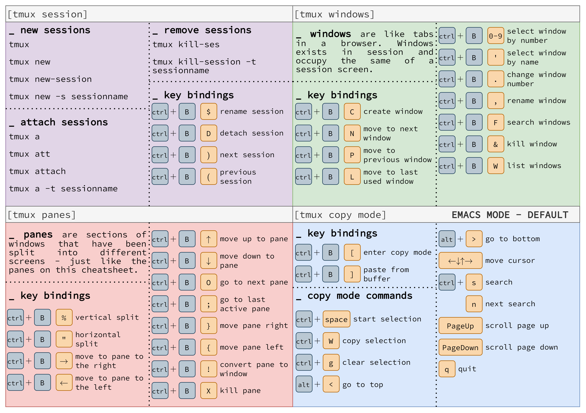

![]()
Tmux
shortcuts

Sessions
tmux list-sessions
tmux attach-session -t target-sessionCtrl + B + ( # Cycle through all the available sessions and switch to the lastest active one
Ctrl + B + ( # Cycle through all the available sessions and switch to the lastest active one
Ctrl + B + L # Switch to the lastest session, regardless of whether it was detached or attached
Ctrl + B + D # Detach from linux screen sessionWindows
Ctrl + B + W # List all windows (the current window is marked with "*") .
Ctrl + B + N # Switch to the next window.
Ctrl + B + P # Switch to the previous window.
Ctrl + B + C # create a new window (with shell).
Ctrl + B + 0-9 # go to a window numbered 0-9 .
Ctrl + B + K # kill the current window. Panes
Ctrl + B + Q # List all the panes and theri number
Ctrl + B + ↑ # Switch to the pane above the current one
Ctrl + B + ↓ # Switch to the pane below the current one
Ctrl + B + ← # Switch to the pane left of the current one
Ctrl + B + → # Switch to the pane right of the current oneWorkflow
- Create session
- Setup session
- Work
- Detach
- Attach
- Work
- To 4
Useful Aliases
alias t="tmux"
alias ta="t a -t"
alias tls="t ls"
alias tn="t new -t"Now we can run any tmux commands by just typing t (saved 3 characters and much cognitive load! Yeah!), create a new session with t {session-name}, attach to an existing session with ta {session-name} and list all your sessions with tls.
Single session
- Add the below snippet to your remote settings in VSCode.
{
"terminal.integrated.profiles.linux": {
"tmux": {
"path": "/usr/bin/tmux",
"args": [
"new-session",
"-A",
"-s",
"main"
],
},
},
"terminal.integrated.defaultProfile.linux": "tmux",
}Session Per Workspace
- Use vscode variables to make one tmux-session per project,
{
"terminal.integrated.profiles.linux": {
"tmux": {
"path": "/usr/bin/tmux",
"args": [
"new-session",
"-A",
"-s",
"vscode-${workspaceFolderBasename}"
],
},
},
"terminal.integrated.defaultProfile.linux": "tmux",
}Remote setting
// 2023-04-10 updated
{
"r.rterm.linux": "/home/zhonggr/.local/bin/radian",
// "r.rterm.linux": "/bin/R",
"r.rpath.linux": "/bin/R",
"r.alwaysUseActiveTerminal": true,
"r.bracketedPaste": true,
"r.sessionWatcher": true,
// "terminal.integrated.defaultProfile.linux": "R Terminal",
// "terminal.integrated.defaultProfile.linux": "bash",
"r.plot.useHttpgd": true,
"editor.tabCompletion": "on",
"editor.acceptSuggestionOnEnter": "off",
"terminal.integrated.profiles.linux": {
"tmux": {
"path": "/usr/bin/tmux",
"args": [
"new-session",
"-A",
"-s",
"main"
],
},
},
"terminal.integrated.defaultProfile.linux": "tmux"
}source-file ~/.tmux.confScreen
General commands
screen # start a screen session
screen -S session_name # start a named session
screen -r # reattach to a linux screen
screen -ls # list the current running screen sessionCommon commands for managing Linux Screen Windows:
Ctrl + A + C # create a new window (with shell).
Ctrl + A + K # kill the current window.
Ctrl + A + W # list all windows (the current window is marked with "*") .
Ctrl + A + 0-9 # go to a window numbered 0-9 .
Ctrl + A + N # go to the next window.
Ctrl + A Ctrl + A # toggle between the current and previous window.
Ctrl + A + A # rename the current window.
Ctrl + A + S # split current region horizontally into two regions.
Ctrl + A + | # split current region vertically into two regions.
Ctrl + A + Tab # switch the input focus to the next region.
Ctrl + A + Ctrl + A # toggle between the current and previous windows
Ctrl + A + Q # close all regions but the current one.
Ctrl + A + X # close the current region.
Ctrl + A + D # detach from linux screen session
Ctrl + A + [ # start copy mode
Ctrl + A + ] # paste copied text
Ctrl + A + ? # help, display a list commands
Ctrl + A + Ctrl + \ # quit screenscreen -ls
## Output
There are screens on:
10835.pts-0.linuxize-desktop (Detached)
10366.pts-0.linuxize-desktop (Detached)
2 Sockets in /run/screens/S-linuxize.If want to restore screen 10835.pts-0, then
screen -r 10835Press the Spacebar or Enter to end a command.
To copy a block
To get into copy mode, press Ctrl-a [ .
To move the cursor, press the h, j, k, and l (the letter l) keys. The 0 (the number 0) or ^ (the caret) moves to the start of the line and $ (the dollar sign) moves to the end of the line. Ctrl-b scrolls the cursor back one page and Ctrl-f scrolls forward one page. To set the left and right margins of copy, press c and C (Shift-c). The Spacebar starts selecting the text and ends selecting the text. To abort copy mode, press Ctrl-g.
To paste a block
To paste the copied text to the current window (as many times as you want), press Ctrl-a ].
Reference
- https://www.zdyn.net/system/hacks/2020/09/19/vscode-term-session.html
- https://arcolinux.com/everthing-you-need-to-know-about-tmux-introduction/
- https://www.barbarianmeetscoding.com/blog/jaimes-guide-to-tmux-the-most-awesome-tool-you-didnt-know-you-needed
- Customizing TMUX for Efficiency and Aesthetics: Part 1
- Customizing TMUX for Efficiency and Aesthetics: Part 2